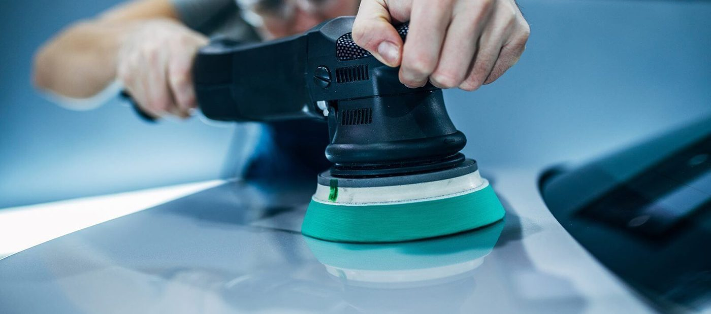
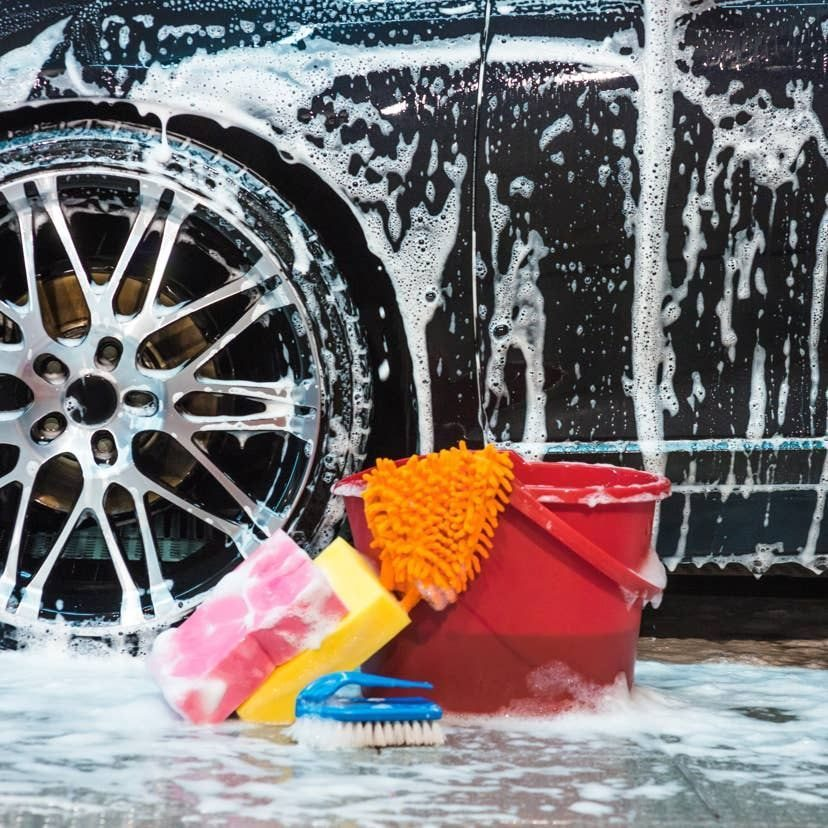
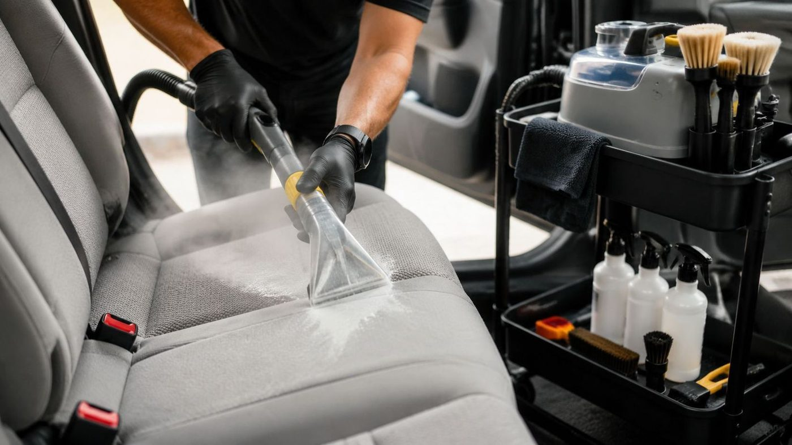

An auto detailing service in Indianapolis. Work covers exterior wash, interior cleaning, full detail packages, and window tinting.



7210 Georgetown Rd Suite 400, Indianapolis, IN
Open Monday to Friday, 10 AM to 7 PM, and Saturday, 12 PM to 5 PM.